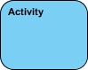
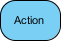
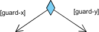
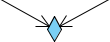
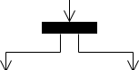
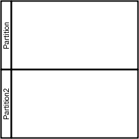

Tegevusskeem on dünaamiline skeem, mis näitab tegevust ning ka sündmust mis
põhjustab objekti teatud olekus olemist.
Tegevusskeeme kasutatakse tarkvaratehnikas, et mõista programmide voogu kõrgel tasemel.
Samuti võib see aidata inseneridel kindlaks teha kitsaskohti või piiranguid,
mis viivad süsteemis teatud sündmusteni.
Tegevusskeemide tähistuste tähendused:
Tegevus - Kasutatakse toimingute kogumi tähistamiseks

Tegevus - Ülesanne, mis tuleb täita

Voo juhtimine - Näitab täitmise järjekorda

Objekti voog - Näitab objekti liikumist ühelt tegevuselt (või toimingult) teisele tegevusele (või toimingule)

Esialgne sõlm - Kujutab tegevuste või tegevuste kogumi algust
Tegevuse lõppsõlm - Peatab tegevuses (või toimingus) kõik juhtimisvood ja objektivood
Objekti sõlm - Esindab objekti, mis on ühendatud objektivoogude komplektiga
Otsusesõlm - Esitab katsetingimuse tagamaks, et kontrollvoog või objektivoog kulgeb ainult ühte rada pidi

Ühenduse sõlm - Toob uuesti kokku erinevad otsuseteed, mis loodi otsustussõlme abil

Kahvelsõlm - Jagab käitumine paralleelsete või samaaegsete tegevuste (või toimingute) kogumiks

Liitumissõlm - Toob kokku paralleelsete või samaaegsete tegevuste (või toimingute) kogumi
Ujumisrada ja partitsioon - Viis rühmitada tegevusi, mille on sooritanud sama näitleja,
või rühmitada tegevusi ühte lõime

Vooskeemi näide:
Bitcoini kalkulaatori vooskeem
allikad: Helena Kruus leht MindManager Visual Paradigm